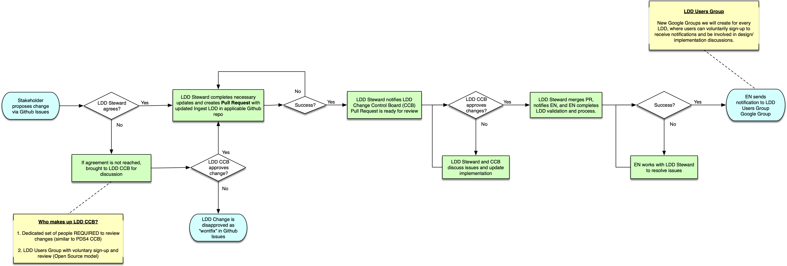

LDD Update Process¶
The following are the necessary steps to propose and execute an update to a PDS4 Local Data Dictionary.
{kind=link}
1. Change Request Proposed¶
The process is initiated when a user requests an update to an LDD via the PDS4 Github Issues Repo.
2. LDD Steward Initial Approval¶
The update request is received by the LDD Steward, who makes an initial determination of whether or not the change is warranted.
If no, the issue is brought to the LDD Change Control Board (link TBD) for discussion. The outcome of that User Group discussion will determine whether or not to proceed.
3. Update IngestLDD¶
Once the LDD Steward approves the change, they will get the latest version of the LDD from Github, and complete the necessary updates to the IngestLDD file (TBD link).
The LDD Steward can download and use LDDTool for testing purposes, but only changes to the IngestLDD should be added to the Github repo in future steps.
4. Push Updates To Github¶
Once the LDD Steward has completed the necessary changes to the IngestLDD, a Pull Request (TBD link) is then created in the applicable LDD repository. When creating the Pull Request, sufficient documentation and details need to be provided in order to sufficiently describe the change and the rationale for LDD Change Control Board (link TBD) review.